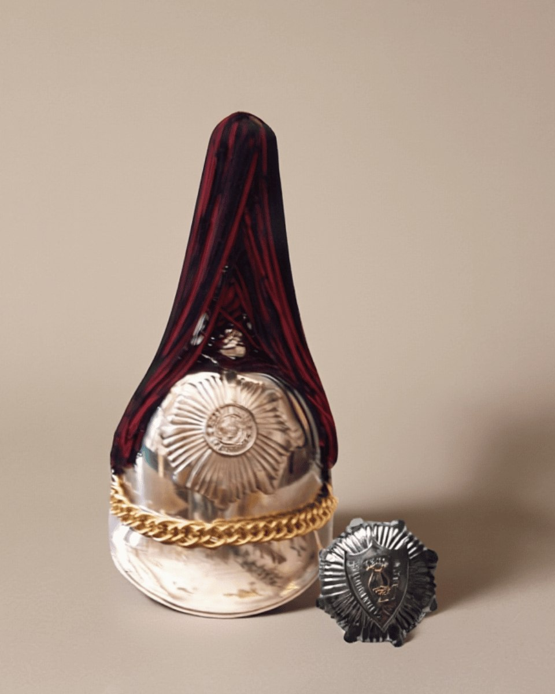
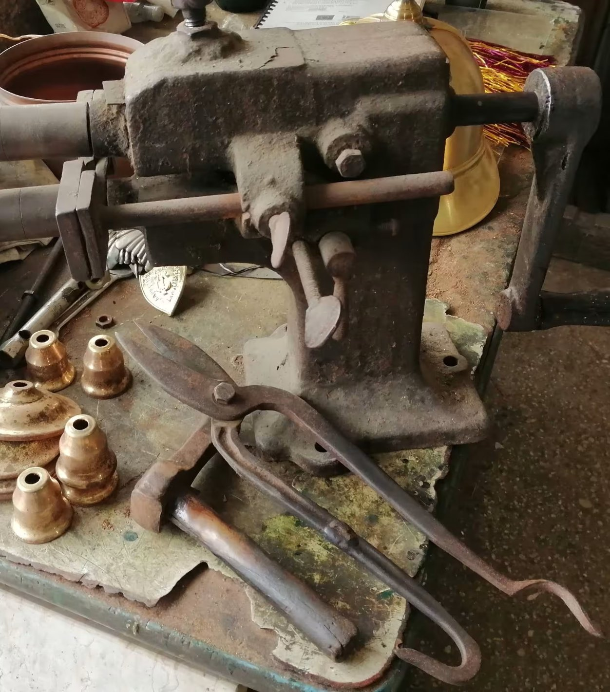
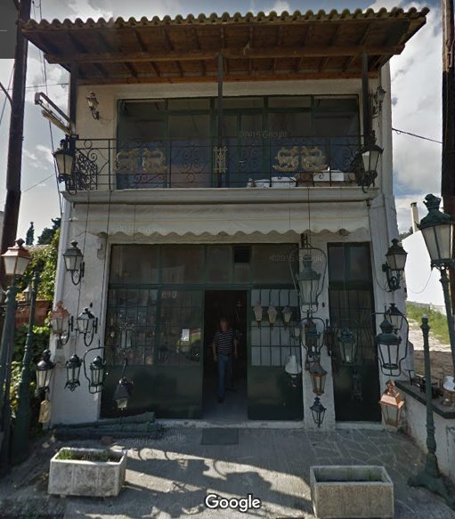

Κέρκυρα · από το 1950
Χειροποίητα φανάρια και φωτιστικά από το εργαστήριό μας στην Κέρκυρα
Βενετσιάνικα φανάρια, μαντεμένιες κολώνες, μπρούτζινα φωτιστικά και κράνη φιλαρμονικής, φτιαγμένα στο χέρι. Αποστολή σε όλη την Ελλάδα.
Για φιλαρμονικές: κράνη και σήματα με το έμβλημά σαςΤα προϊόντα μας
Τι φτιάχνουμε στο εργαστήριο
Επιλέξτε κατηγορία για να δείτε σχέδια, διαστάσεις και φινιρίσματα.
-

Βενετσιάνικα φανάρια
Κρεμαστά, επιτοίχια και επιδαπέδια φανάρια, συμβατά με τη ζώνη UNESCO της Παλιάς Πόλης.
Δείτε τη συλλογή -

Κολώνες φωτισμού
Μαντεμένιες κολώνες για κήπους, πλατείες και δρόμους.
Δείτε τη συλλογή -

Φωτιστικά εσωτερικού χώρου
Μπρούτζινα επιτραπέζια, λαμπατέρ, πολυέλαιοι και αντίκες.
Δείτε τη συλλογή -

Κράνη φιλαρμονικής
Κράνη και σήματα για φιλαρμονικές σε Ελλάδα και Κύπρο.
Δείτε τη συλλογή


Το εργαστήριο
Από το 1950, με τις ίδιες παραδοσιακές τεχνικές
Το εργαστήριο Μιλτιάδης Πουλημένος λειτουργεί στο Βρυώνη της Κέρκυρας από το 1950.
Τα φανάρια μας είναι εμπνευσμένα από τα βενετσιάνικα φανάρια που φωτίζουν τα καντούνια της Κέρκυρας. Κάθε κομμάτι κατασκευάζεται στο χέρι, με μέταλλο, χαλκό και μπρούτζο, στο εργαστήριό μας στο Βρυώνη.
Αναλαμβάνουμε κατασκευές κατά παραγγελία και στέλνουμε σε όλη την Ελλάδα.
- στην Κέρκυρα
- 75+ Χρόνια
- Αποστολή σε κάθε γωνιά
- Πανελλαδικά
- Φανάρια συμβατά με την Παλιά Πόλη
- UNESCO
Για φιλαρμονικές
Κράνη και σήματα, με το έμβλημα της δικής σας μπάντας
Έχουμε προμηθεύσει με κράνη μας πολυάριθμες φιλαρμονικές στην Ελλάδα και στην Κύπρο. Κάθε κράνος κατασκευάζεται στο χέρι, με το σήμα και τη χρονολογία ίδρυσης της φιλαρμονικής σας.

Συχνές ερωτήσεις
Ό,τι θέλετε να ξέρετε για το εργαστήριο
Δεν βρίσκετε την απάντηση που ψάχνετε; Επικοινωνήστε μαζί μας.
Πού βρίσκεται το εργαστήριο και ποιο είναι το ωράριο;
Το εργαστήριο βρίσκεται στο Βρυώνη Κέρκυρας (Τ.Κ. 49084). Είμαστε ανοιχτά Δευτέρα έως Παρασκευή 8:30–16:30 και Σάββατο 8:30–13:30. Την Κυριακή είμαστε κλειστά.
Είναι τα φανάρια σας συμβατά με τη ζώνη UNESCO της Κέρκυρας;
Ναι. Τα βενετσιάνικα φανάρια μας είναι συμβατά με τη ζώνη UNESCO της Παλιάς Πόλης της Κέρκυρας.
Έχετε φτιάξει φανάρια για γνωστά κτίρια της Κέρκυρας;
Ναι. Τα φανάρια που κοσμούν το κτίριο Λιστόν, στην κεντρική πλατεία της Κέρκυρας, είναι δουλειά του εργαστηρίου μας.
Τι υλικά χρησιμοποιείτε;
Τα φανάρια κατασκευάζονται από χαλκό και σίδερο, οι κολώνες φωτισμού είναι μαντεμένιες, τα φωτιστικά εσωτερικού χώρου είναι από μπρούτζο και τα κράνη φιλαρμονικής είναι μπρούτζινα ή από νίκελ.
Φτιάχνετε κράνη για φιλαρμονικές εκτός Κέρκυρας;
Ναι. Έχουμε προμηθεύσει με κράνη και σήματα πολυάριθμες φιλαρμονικές στην Ελλάδα και στην Κύπρο, με το έμβλημα και τη χρονολογία ίδρυσης της καθεμιάς.
Κάνετε αποστολή σε όλη την Ελλάδα;
Ναι, στέλνουμε σε όλη την Ελλάδα. Τα προϊόντα είναι χειροποίητα και διαθέσιμα κατόπιν παραγγελίας.
Πώς μπορώ να ζητήσω προσφορά;
Συμπληρώστε τη φόρμα στη σελίδα επικοινωνίας ή καλέστε μας στο 2661 027811. Μπορείτε επίσης να μας στείλετε μήνυμα σε WhatsApp ή Viber στο 697 828 1307.
Μετάβαση στη φόρμαΕπικοινωνία
Ελάτε στο εργαστήριο ή ζητήστε προσφορά
Απαντάμε σε ερωτήσεις, στέλνουμε φωτογραφίες και τιμές για κάθε σχέδιο.
Μιλήστε μας απευθείας
| Δευτέρα – Παρασκευή | 8:30 – 16:30 |
|---|---|
| Σάββατο | 8:30 – 13:30 |
| Κυριακή | Κλειστά |